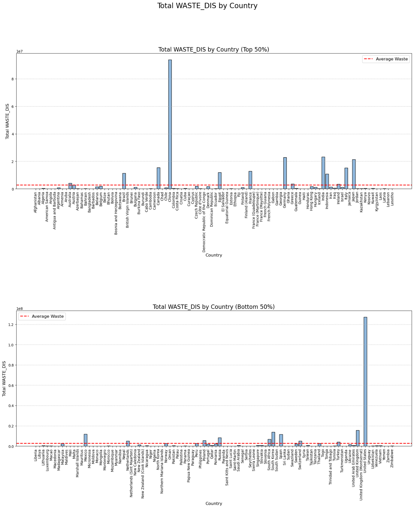

INTRODUCTION
Water waste management is the practice of managing and minimizing the amount of water that is wasted or lost in various processes and activities. This includes managing water usage in households, industries, agriculture, and other sectors to ensure that water resources are conserved and used in a sustainable manner.
Water waste management involves various strategies and techniques such as reducing water usage through conservation measures, repairing leaks and damages to water infrastructure, recycling and reusing water, and implementing wastewater treatment processes to treat and reuse wastewater.
Effective water waste management is critical for sustainable development and the protection of natural resources. By reducing water waste, we can conserve water resources, minimize water pollution and contamination, and ensure that water is available for future generations.
Analyzing COUNTRY: WASTE DISPOSED by the COUNTRY
Looking at the chart, you may notice that some countries have much higher levels of waste disposal than others. This can be due to a variety of factors such as population size, economic development, and waste management policies and practices.
Countries with high levels of waste disposal may face significant environmental and public health challenges, including land and water pollution, greenhouse gas emissions, and health risks associated with hazardous waste. To address these challenges, governments and communities may need to implement policies and programs that promote waste reduction, recycling, and sustainable waste management practices.
Ultimately, the goal of monitoring and understanding waste disposal trends is to encourage responsible and sustainable waste management practices that minimize negative impacts on the environment and public health, while supporting economic growth and social well-being.
Effects of Water Pollution
- In conclusion, water treatment plants play a crucial role in ensuring that the water we consume is safe and free from harmful contaminants. Across the world, many countries have invested in water treatment plants to provide clean and safe water for their citizens.
- However, despite these efforts, many people still lack access to clean water due to various factors such as lack of infrastructure, poor management, and inadequate resources. There is a need for continued investment in water treatment plants, particularly in developing countries where access to clean water is still a major challenge.
- Additionally, there is a need for increased awareness among the public on the importance of water conservation and reducing pollution to minimize the need for extensive water treatment. Overall, water treatment plants are an essential aspect of ensuring safe and clean water for communities across the world.